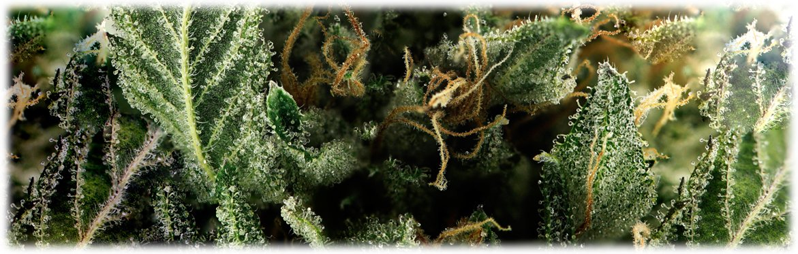
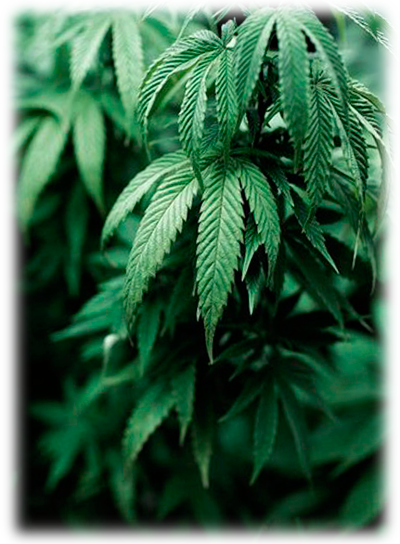
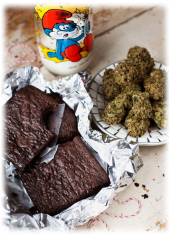

Все о марихуане
Марихуана стала всемирно известным продуктом в начале 1960 годов благодаря культуре "хиппи". Тем не менее не многие на сегодняшний день знают все о марихуане, конопле а так же о том что растение марихуаны применяли и употребляли еще древние племена как лекарство, пищу и во многих других целях. Благодаря своей безмерной популярности в мире, марихуана имеет десятки названий. Самые популярные из них в странах СНГ: конопля, каннабис, план, ганджа, травка, ганджубас, дубас, дуст, маривана.
Все о марихуане начиная от эффекта курения и до использования в медицине

Что такое конопля, каннабис, анаша и она же — марихуана
Конопля — растение которое достаточно быстро развивается, с серьезной корневой системой, густой листвой, соцветиями и очень прочными стеблями. Существуют разновидности Cannabis Sativa, Indica, Ruderalis. Само растение конопли достаточно неприхотливое и растет во многих теплых климатических зонах.

Марихуана — это наркотик из сухих шишковидных цветов и листков растения конопля sativa или indica. В себе марихуана насчитывает более 60 психоактивных веществ, которые называются "каннабиноиды". Наиболее значимые из них Cannabinol, Tetrahydrocannabinol, Cannabidiol, Cannabichromene, Cannabigerol и другие. Самым важным веществом является "дельта 9" тетрагидроканнабиол (Delta-9-tetrahydrocannabinol) или ТГК.
Химическое название: Delta-9-tetrahydrocannabinol
Химическая формула: C21H30O2
Гашиш — одна из популярных производных конопли. Это "пластилин", получаемый из смолы, выделяемой коноплей для защиты от палящих солнечных лучей. Сленговые названия: гашик, гаш, гэш, пластилин.
Шишки конопли — в сленге "шишки", "бошки". Это волокнистые цветы на растении, содержащие наибольшее количество психоактивных веществ.
✦ ✦ ✦
Основные каннабиноиды
🧪
THC (ТГК)
Delta-9-tetrahydrocannabinol. Основное психоактивное вещество. Отвечает за эйфорию и расслабление.
💊
CBD (КБД)
Cannabidiol. Не психоактивен. Используется в медицине: снятие боли, тревоги, воспалений.
🔬
CBN (КБН)
Cannabinol. Обладает седативным эффектом. Помогает при бессоннице.
🌱
CBG (КБГ)
Cannabigerol. Материнский каннабиноид. Антибактериальные свойства.
Действие марихуаны на состояние человека
Курение — эффект каннабиса при курении зачастую моментальный. Наибольшее действие достигается на протяжении получаса и проходит от 2х до 5 часов.
Употребление в пищевых продуктах — эффект марихуаны при таком употреблении значительно усиливается и увеличивается время действия от 5 до 12 часов.
Сорта марихуаны Cannabis Sativa — действуют на организм человека, как замедлители, тем не менее позволяют оставаться активным и веселым.
Сорта марихуаны Cannabis Indica — создают более успокаивающее, замедляющее действие. При курении "индики" человек становится более расслабленным, повышается чувство дремоты и умиротворения.
Эффект марихуаны

Когда человек не употребляет больше ничего кроме конопли, исключает алкоголь и прочие наркотические стимуляторы, марихуана производит наиболее положительный эффект на мозг и организм в целом. В состоянии марихуанного опьянения чувствительность человека значительно увеличивается ко всему естественному в этом мире. Намного ярче и красивее воспринимаются цвета, сильнее и эффектнее воспринимается музыка.
Чтобы наверняка знать все о марихуане, важно отметить что употребление ее с алкоголем и другими наркотическими препаратами могут принести негативный эффект. Может появиться чувство страха, паники, беспокойства или дезориентации. Такой эффект можно устранить чашкой горячего чая с сахаром, свежим воздухом или легкой успокоительной беседой.
Вред марихуаны
При употреблении марихуаны с алкоголем и другими наркотическими препаратами, а так же в случае серьезной аллергической реакции, последствия могут быть непредсказуемыми. Могут возникать рвотные позывы, обморочные состояния, вялость и звон в ушах. Курение влияет на органы дыхательной системы.
Относительно психического влияния, мнения специалистов расходятся. Влияние марихуаны на мозг для каждого человека протекает абсолютно по-разному.
Часть исследований утверждают, что регулярное употребление марихуаны способствует развитию психических заболеваний, психозов и шизофрении. Основной негативной стороной является возможный следующий шаг к более серьезным наркотикам. В странах, где марихуана легализована, уровень употребления тяжелых наркотиков в десятки раз ниже.
Зависимость от марихуаны
Привыкание к марихуане протекает достаточно медленно. При регулярном и долгом употреблении марихуана вызывает зависимость. Резкое прекращение может вызывать раздражительность, агрессию, апатию, потерю аппетита, бессонницу на 2-3 дня.
Закон о марихуане в Украине
Мировая культура лишь частично принимает и легализирует марихуану. Во многих странах существует запрет на выращивание, употребление и продажу конопли. Существуют страны, которые запрещают только выращивание, но употребление для личных целей не запрещено — это разрешено в Австралии, Бельгии, Люксембурге и Нидерландах.
Ямайка является родиной марихуаны, и здесь она официально признана частью национального достояния, но продажа марихуаны запрещена.
В Украине, России, Беларуси марихуана состоит в списке запрещенных веществ. Ее употребление, выращивание, владение карается законом согласно статье про "Оборот и употребление наркотических средств и психотропных веществ".